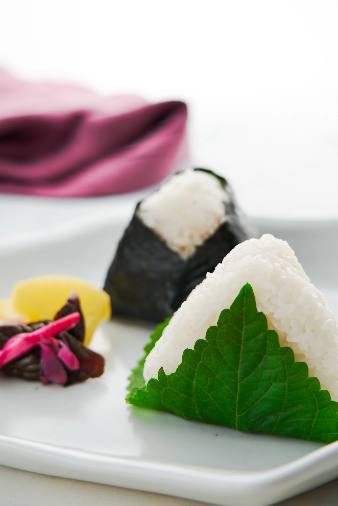

Onigiri!!

Quick, easy but nutritious recipe for lunch , breakfast, or snack
Ingredients
- Canned tuna
- Mayonnaise
- Soy sauce
- Rice
- Seaweed
Instructions
- Cook rice and let it rest until warm
- Mix canned tuna with Mayonnaise and soy sauce
- Stuff rice in a mold and put one spoonful of the tuna-mayo mix in the middle of the mold
- Compress the mold
- Take the rice ball out of the mold and wrap with seaweed